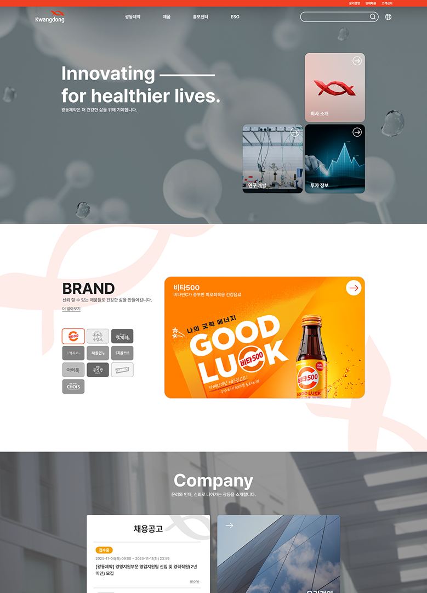
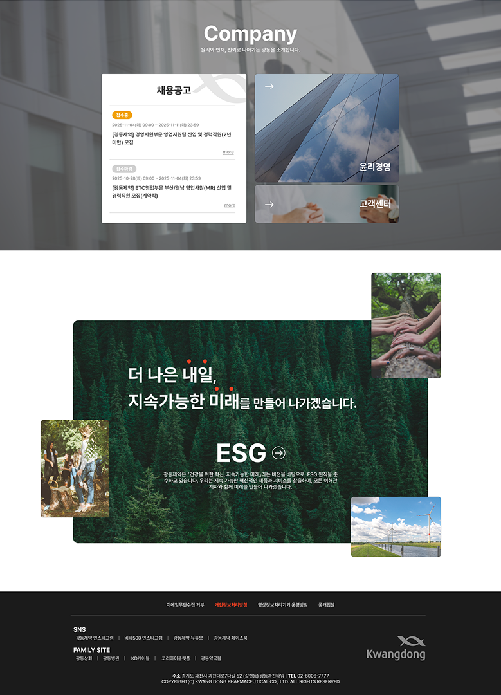

광동제약 메인
LOGO
PROJECT
광동제약 redesign
: 광동제약은 1963년에 설립된 국내 대표 제약회사 중 하나로, 의약품, 건강음료, 한방의약품 등을 개발·생산하고 있습니다.OVERVIEW
기존 홈페이지는 기업의 정체성과 비전을 전달하기보다는 제품 중심의 구성으로 이루어져 있어, 이를 보완하고 ‘회사 사이트로서의 역할과 브랜드 아이덴티티를 강화’하기 위해 본 프로젝트를 진행하게 되었습니다.
GRID
- Column
- Margin
- Gutter
- 12
- 280
- 20
DESIGN GUIDE
Typography
- h1
- h2
- body
- Pretendard
- Pretendard
- Pretendard
- bold
- bold
- medium
- 20px
- 70px
- 20px
Color
-
#FFFFFF
-
#181818
-
#EF4023
CONCEPT
기존 네비게이션 메뉴는 체계적으로 구성되어 있어 일부 명칭만 조정했으며, 회사가 추구하는 헬스케어 이미지를 강조하고, 기업 사이트라는 정체성을 확실히 드러내도록 설계했습니다. 또한 동적인 효과를 적용하여 사용자가 사이트에 보다 몰입할 수 있도록 구현했습니다.
INFOMATION
- Tool
- Figma
- VScode
- Duration
- 2 days
- 2.5 days
- Contribution
- 100%
광동제약 시안
DESIGN PROPOSAL

